| Escape sequences in output (repaint, cursor, hide text) |
Not parsed |
Interpreted |
A normal terminal treats program output as commands: move the cursor, erase and repaint lines, hide or fake text. secure-terminal parses none of it apart from safe colour and four line-local edits (CSI C/D/G/K) clamped to the line being written, so any stray control byte shows as an inert box and nothing a program prints can repaint the screen or reach a line already scrolled past. See the compatibility page for exactly which sequences are neutralised.
secure-terminal - the escapes are inert: safe colour clamped readable, the DEC frame shown as literal characters; nothing repaints and the prompt returns clean.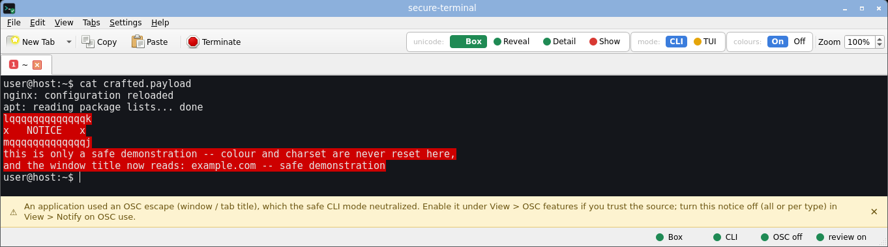
gnome-terminal - interprets the sequences - the stuck colour and DEC line-drawing repaint the screen.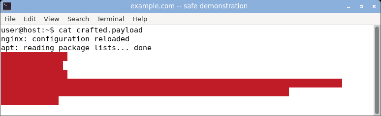
konsole - interprets the sequences - the stuck colour and DEC line-drawing repaint the screen.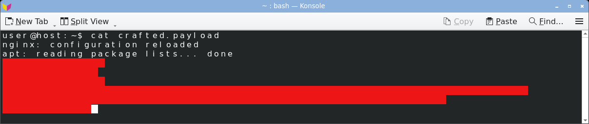
xfce4-terminal - interprets the sequences - the stuck colour and DEC line-drawing repaint the screen.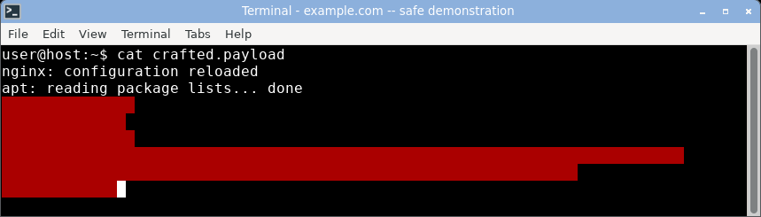
mate-terminal - interprets the sequences - the stuck colour and DEC line-drawing repaint the screen.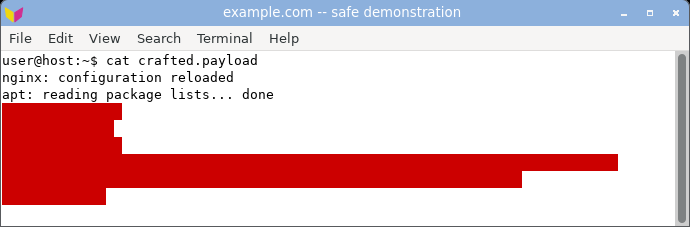
qterminal - interprets the sequences - the stuck colour and DEC line-drawing repaint the screen.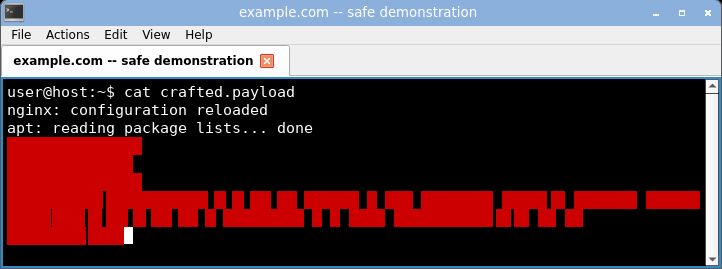
xterm - interprets the sequences - the stuck colour and DEC line-drawing repaint the screen.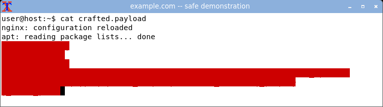
urxvt - interprets the sequences - the stuck colour and DEC line-drawing repaint the screen.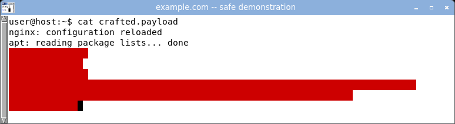
st - interprets the sequences - the stuck colour and DEC line-drawing repaint the screen.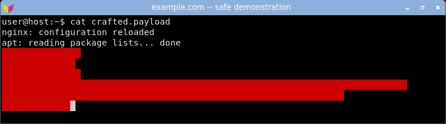
alacritty - interprets the sequences - the stuck colour and DEC line-drawing repaint the screen.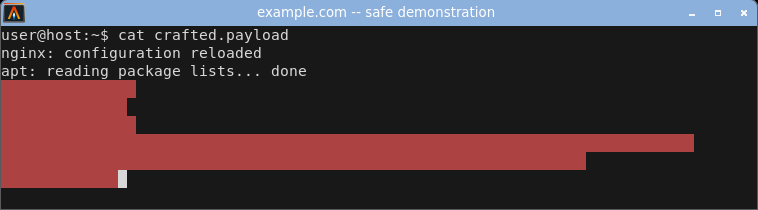
kitty - interprets the sequences - the stuck colour and DEC line-drawing repaint the screen.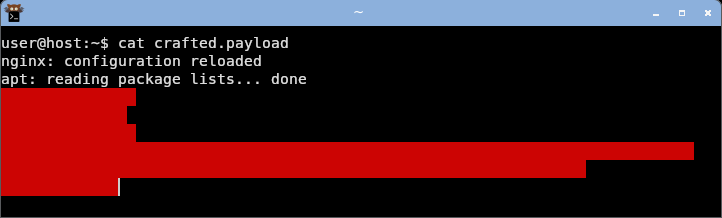
|
Merely viewing a file (cat, a log, a diff) |
Safe |
Triggers tricks |
|
| Window / tab title hijack (OSC 0/2) |
Never touched |
gnome-terminal, xfce4-terminal, mate-terminal, qterminal, xterm, urxvt, st, alacritty: Hijacked
konsole: Stored, not shown
kitty: Reset at prompt
|
|
| Desktop notification spoof (OSC 9) |
Neutralised |
kitty: Pops a popup
the others: No OSC 9
|
kitty (like iTerm2) implements OSC 9, so program output can raise a real desktop notification with attacker-chosen text, outside the terminal window entirely. The others in this set do not implement it, so the class does not apply to them. secure-terminal's CLI mode strips the escape - no popup, inert text, a banner flags it. The payload is the corpus notification-spoof-kitty-2022 class.
secure-terminal - OSC-9 notification neutralised: no popup, inert text, a banner flags the blocked escape.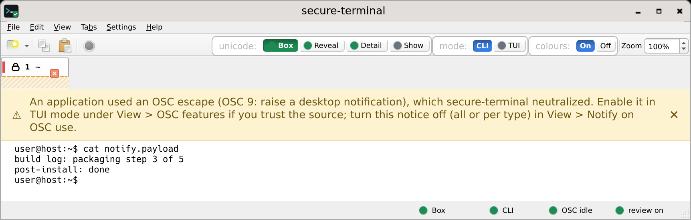
kitty - a log line pops a real desktop notification (top-right), outside the terminal.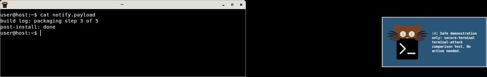
|
| Clipboard write from output (OSC 52) |
Off by default |
konsole, alacritty, kitty: Honored
gnome-terminal, xfce4-terminal, mate-terminal, qterminal, xterm, urxvt, st: Refused
|
The OSC 52 clipboard write is the one class a screenshot cannot show - its effect is on your system clipboard, not the screen. So we measured it directly: for each terminal we seeded the X clipboard with a sentinel, cat'd the corpus osc52-clipboard-write payload, and read the real clipboard back (via PyQt6). If the token landed, output overwrote your clipboard. Tested 2026-08-12 on shipped defaults, window focused.
| Terminal | OSC 52 clipboard write (shipped default) |
|---|
| konsole (KDE), alacritty (GPU), kitty (GPU) | Honored - viewing the payload silently overwrote the clipboard. |
| gnome-terminal, xfce4-terminal, mate-terminal (VTE) | Refused - mainline VTE ships no OSC 52 write at all. |
| xterm, urxvt, st | Refused - xterm is one allowWindowOps flag from honoring it. |
| qterminal (LXQt) | Refused. |
| secure-terminal | Refused - OSC 52 write is off by default; opt-in per tab. |
Three of the ten let untrusted output silently overwrite your clipboard on their defaults. This is a real per-terminal verdict: clipboard-verdict.sh reads the real clipboard back after each terminal views the payload. Note the twist: konsole does not surface a hijacked title, yet does honour the clipboard write.
|
| Clipboard read / query reflection (OSC 52 read, DA, answerback) |
Never answered |
Reflects queries |
|
| Invisible / zero-width characters |
Marked / boxed |
Drawn as nothing |
Zero-width and other invisible characters draw nothing, so a command or a paste can carry hidden bytes you never see - the heart of the pastejacking demo. secure-terminal names each inline as <U+XXXX NAME> by default, or shows an inert risk-coloured box.
secure-terminal - the hidden zero-width byte is an inert box between admin and istrator; you can see it is there.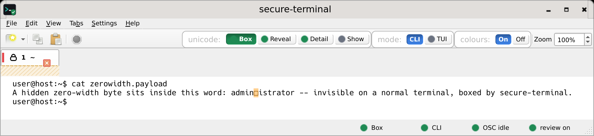
gnome-terminal - the word reads as a clean administrator - the zero-width byte is invisible.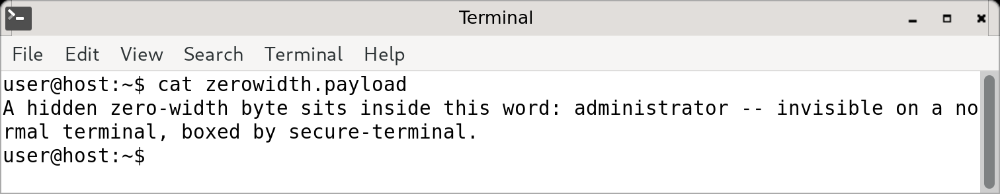
konsole - the word reads as a clean administrator - the zero-width byte is invisible.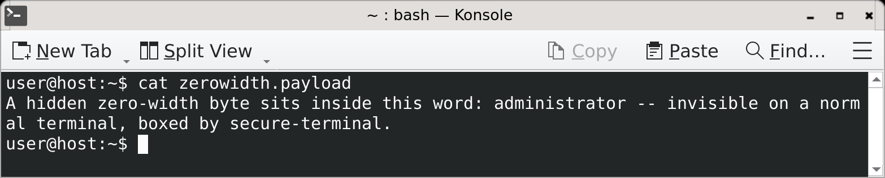
xfce4-terminal - the word reads as a clean administrator - the zero-width byte is invisible.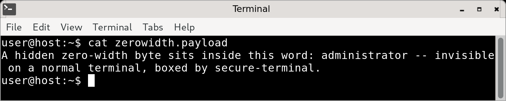
mate-terminal - the word reads as a clean administrator - the zero-width byte is invisible.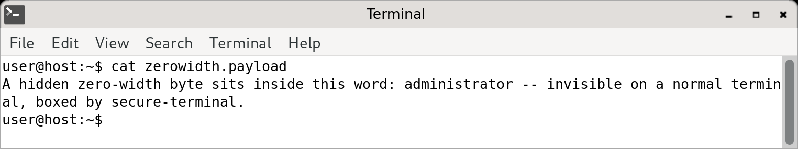
qterminal - the word reads as a clean administrator - the zero-width byte is invisible.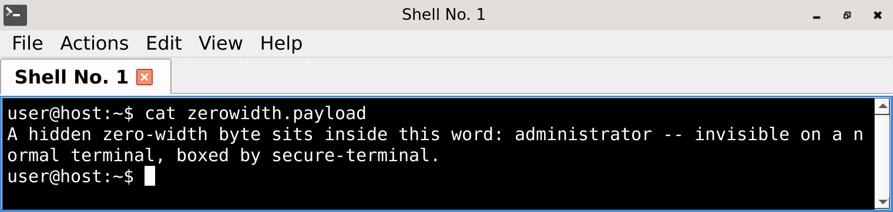
xterm - the word reads as a clean administrator - the zero-width byte is invisible.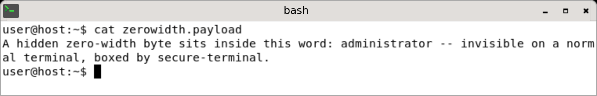
urxvt - the word reads as a clean administrator - the zero-width byte is invisible.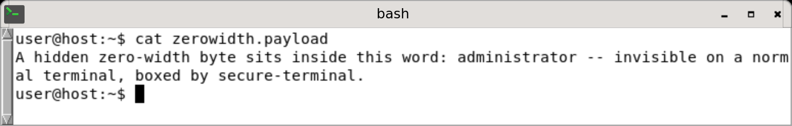
st - the word reads as a clean administrator - the zero-width byte is invisible.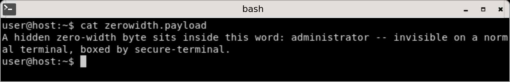
alacritty - the word reads as a clean administrator - the zero-width byte is invisible.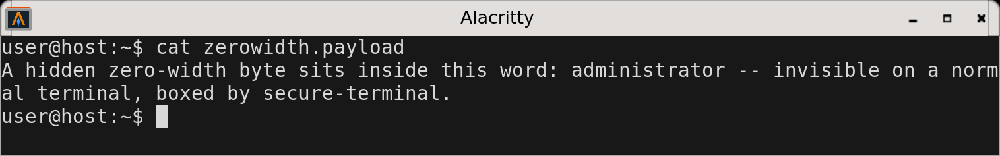
kitty - the word reads as a clean administrator - the zero-width byte is invisible.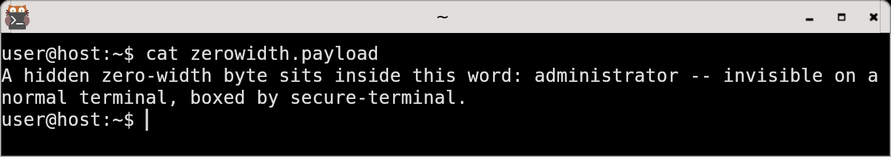
|
| Homoglyph look-alikes |
Boxed / named |
Renders identical |
Non-ASCII characters identical in shape to ASCII (a Cyrillic a, a Greek o) make a fake command or URL read as legitimate - a clean example.com that is not. Universal across terminals. secure-terminal flags the look-alike byte as a coloured box, or names its exact codepoint in Detail mode.
secure-terminal - the Cyrillic look-alike is an inert coloured box; Detail mode names it <U+0430 CYRILLIC SMALL LETTER A>.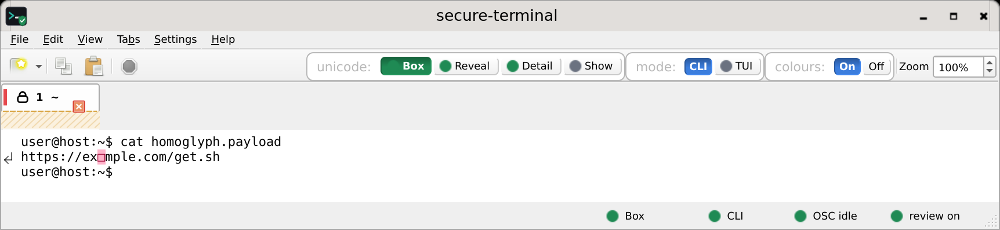
gnome-terminal - renders a clean-looking example.com - the Cyrillic look-alike is indistinguishable.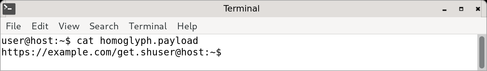
konsole - renders a clean-looking example.com - the Cyrillic look-alike is indistinguishable.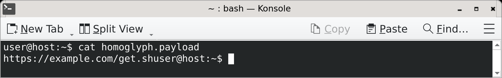
xfce4-terminal - renders a clean-looking example.com - the Cyrillic look-alike is indistinguishable.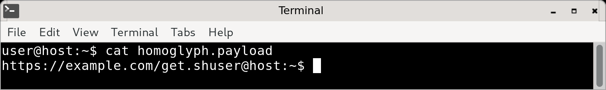
mate-terminal - renders a clean-looking example.com - the Cyrillic look-alike is indistinguishable.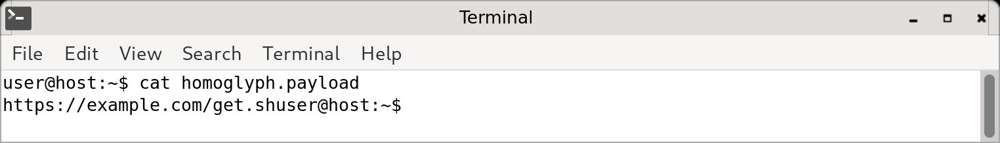
qterminal - renders a clean-looking example.com - the Cyrillic look-alike is indistinguishable.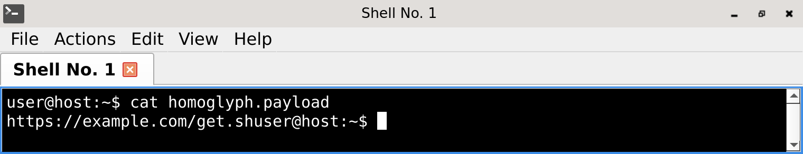
xterm - renders a clean-looking example.com - the Cyrillic look-alike is indistinguishable.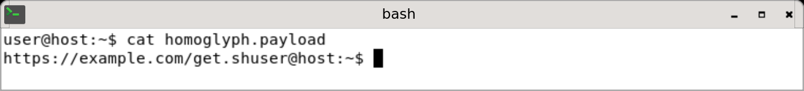
urxvt - renders a clean-looking example.com - the Cyrillic look-alike is indistinguishable.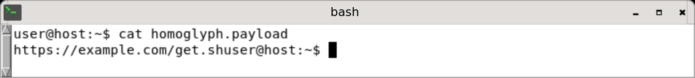
st - renders a clean-looking example.com - the Cyrillic look-alike is indistinguishable.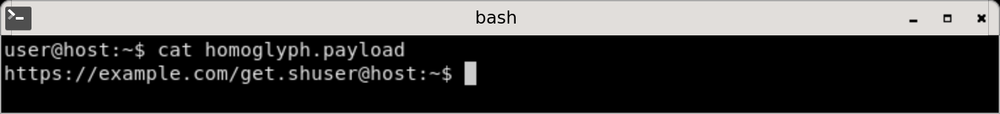
alacritty - renders a clean-looking example.com - the Cyrillic look-alike is indistinguishable.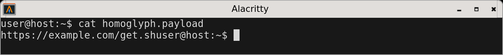
kitty - renders a clean-looking example.com - the Cyrillic look-alike is indistinguishable.
|
| Bidi reorder / Trojan Source |
Neutralised |
gnome-terminal, konsole, xfce4-terminal, mate-terminal: Reorders text
qterminal, xterm, urxvt, st, alacritty, kitty: Present, not reordered
|
|
| Raw random bytes (screen garble, stuck colour) |
Inert ASCII |
Garbled |
|
| Pasted-command smuggling (pastejacking, bracketed-paste bypass) |
Sanitized + warned |
Rides along hidden |
|
| Full-screen programs (ssh, vim, htop, tmux) |
Yes, cell-filtered |
Yes |
|
| Memory safety of the parser |
Memory-safe |
alacritty: Rust (safe)
kitty: C + Python
gnome-terminal, konsole, xfce4-terminal, mate-terminal, qterminal, xterm, urxvt, st: C / C++
|
|